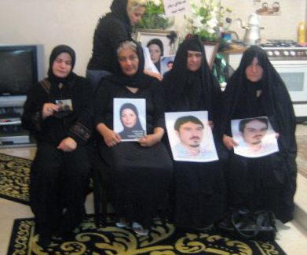

|
|
دیدار جمعی از فعالان جنبش زنان و اعضای کمیته گزارشگران حقوق بشر با خانواده های شهدای خرداد 88
پنج شنبه8 مرداد 1388
کمیته گزارشگران حقوق بشر : اینجا خانه ندا آقا سلطان است. خانه ای کوچک و آرام در منطقه ی شرق تهران. بر در خانه، نه پارچه ی سیاه است و نه نشانی. تنها زنگ در را که می زنی صدای ضجه های زنی را می شنوی که بر تصویر دخترش اشک می ریزد. اینجا خانه ی ندا آقا سلطان است. متولد بهمن 1361. دختر جوانی که 30 خرداد 1388 به ضرب گلوله کشته و به سمبل جنبش سبز مردم ایران تبدیل شد.
و تاریخ، پنج شنبه، هشتم مردادماه، مصادف با چهلمین روز در گذشت اوست. جمعی از مادران عزادار، فعالان جنبش زنان، اعضای کمپین یک میلیون امضا و کمیته گزارشگران حقوق بشر به تسلیت گویی رفته اند. برای لحظه ای در آغوش گرفتن مادرانی عزادار و گریستن در عزایی که حتی اجازه ی عمومی شدن هم ندارد.
وارد خانه که می شوی آن انتها نزدیک دیوار، میز کوچکی ست با قاب عکسی بزرگ از دختری جوان که کوچکی دنیا را تاب نیاورد و رفت. برگه ی با خطوط درشت هم آن بالاتر خودنمایی می کند: " ندا، همیشه در یاد ما زنده است." اما او تنها نیست. این روزها، روز کوچ بزرگان است. روز عروج آنان که ظلم را تاب نیاوردند و در خون غلتیدند. کمی آن طرف تر چهره ی جوان کیانوش آسا خودنمایی می کند.

کیانوش، متولد کرمانشاه، دانشجوی ترم آخر کارشناسی ارشد رشته مهندسی شیمی در دانشگاه علم و صنعت ایران بود و هنگامی که جنازه اش را تحویل گرفتند از مال دنیا تنها یک گلوله در پهلو و یکی دیگر در گردن داشت. جسد او ابتدا قابل شناسایی نبود. خانواده اش بارها و بارها به تصویر او نگریستند و در نهایت با مشاهده ی از نزدیک، توانستند عزیزشان را باز شناسند. کیانوش، با ذهن پرسش گرش همیشه حقایق را جستجو می کرد. چرایی های بسیاری داشت. و پاسخ آخرینش را به داغی سرب دریافت کرد. روز 25 خرداد ماه، از ناحیه پهلو به او گلوله ای شلیک شد و 3 تیر ماه که جنازه را تحویل گرفتند گلوله ی دیگری هم در گردنش بود. چرا؟ هیچ کس نمی داند. کیانوش اهل موسیقی بود و تنبور می زد. نقاش هم بود. کاریکاتور می کشید و دلش در گرو هنر بود. و بزرگترین هنرش آزادی خواهی. هنری را که ظلم بر نمی تابد.
تصویر مسعود هم در کنار کیانوش لبخند می زند با آن نگاه سرشار از جوانی 27 ساله اش. مسعود سنتور و ساز دهنی می زد و نقاشی می کشید و طرح می زد بر این دنیای بی رحم. اولین تیر را که یک بسیجی مقابل پایش می زند حقیقی بودنش را باور نمی کند. جلو می رود و ناگهان می سوزد. گلوله ای در سینه اش جا خوش کرده و قطرات ریز اشک در گوشه ی چشمانش حلقه می زند. ساز دهنی اش کجاست؟ او هیچ شبی را پیش از درد دل گفتن با سازش چشم بر هم نگذاشته. کاش فرصتی بود برای وداع با مادر. کاش زمانی بود برای گفتن آنکه چقدر زود دیر می شود. مسعود که بر خاک افتاد یک بسیجی آن طرف تر اسلحه بر زمین انداخت و واقعیت مرگ را بر سر کوبید.
اینجا خانه ندا آقا سلطان است و خانواده های دیگر شهدای خرداد 1388، نیز آمده اند. مادران شهدای مزبور که از حق مسلم برپایی عزاداری برای فرزندان خود محروم شده اند صبورانه به یادآوری خاطرات فرزندانشان نشسته و از توانایی ها و محاسن آن عزیزان می گویند. سرخی چشمانشان و سکوت اجباری شان حکایت عجیبی دارد از آن همه درد جاری وجودشان. از روزهای سخت تربیت و حمایت از فرزندانشان می گویند. از روزهای بمباران که آنها را به دندان می گرفتند و این سو و آن سو می بردند تا مبادا بمبی جگر گوشه شان را از آنها بگیرد. آنها روزهای جنگ را در همین آب و خاک در کنار دیگران تاب آوردند و کشور را به دست دشمن ندادند و در روزگاری دیگر، جوانی جوانانشان را نه گلوله دشمن که هم وطنی نا هم وطن پرپر کرد.
مادر ندا آقا سلطان برای ندای اسطوره اش زمزمه می کند. سیاه پوش و گریان سر در آغوش آن دیگر مادران می گذارد و تنها می پرسد چرا. وقتی می گویند حال که قاتل شناسایی شده است امکان شکایت و پی گیری پرونده وجود دارد، آرام سربر می آورد و لبخندی بر لب می گوید: "برای من قاتل نیاورید. او تنها مجری بوده است. من قاتل را می بخشم." او دلخوش حضور مردم و همین دیدارهاست و یادی که هر روز زنده تر می شود را تنها دلیل صبوری اش می داند.
کسی از میان فعالان جنبش زنان، برگه ای در دست می گیرد و به یاد ندا و همه ی عزیزانمان مطلبی می خواند و خوب می گوید جنبشی چنین مردمی هیچ گاه نمی تواند نمادی ساختگی را بپذیرد و ندا، نمادی شد که از آغاز با حقیقت وجودی اش سبزی حرکتی مردمی را با خون آزادی خواهی در آمیخت. نمادی که هیچ گاه از یاد نخواهد رفت.
اینجا خانه ندا آقا سلطان است. خانه ای کوچک با رنجی عظیم. مادران عزادار و دیگرانی با چانه های لرزان و حلقه های اشک در چشم. چهل روز گذشت از آن روز که دختری از خانه بیرون رفت و هیچ گاه بازنگشت و پسری وعده ی بازگشت داد و میان سیاهی شهر گم شد.
اینجا خانه ندا آقا سلطان است و فردا ماه برخواهد آمد دوباره و خواهد نگریست بر این شهر ماتم زده با چشمان ندا و شب مملو خواهد شد از صدای تنبور کیانوش و سازدهنی مسعود و هم نوایی سروهای خرامانی که تن به تن بر زمین فرو افتادند.
یادشان گرامی!